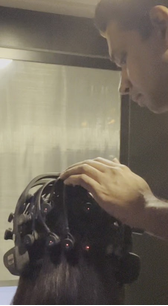
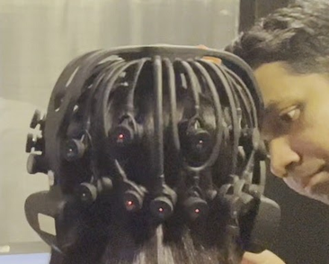

Principal investigator


Dr. Hiran Shanake Perera
Principal Investigator, AffectNeuroLab
My research interests centre on how emotional responses unfold over time: how they begin, what sustains them and how people recover after an emotional event. I am interested in whether disruptions in these processes contribute to psychological difficulties, particularly depression and anxiety.
AffectNeuroLab brings together these research interests and educational resources on EEG, ERP, attention and experimental methods. The emphasis is on understanding the timing of emotional and cognitive processes, using neurophysiological measures alongside behavioural experiments and eye tracking.
This is my personal research website. My current institutional affiliation is listed on the Home page.
Google Scholar and ResearchGate profile name: hiranshanakeperera.
Research interests
- Emotional reactivity, sustained processing and recovery.
- Attentional bias, attentional persistence and disengagement.
- Cognitive control in emotionally meaningful contexts.
- EEG and ERP approaches to experimental psychopathology.
- Behavioural and eye-tracking measures that complement neural timing.
See Research for the questions connecting these themes, and Methods / Resources for an introduction to the approaches.
Students and research support
Team profiles will be added when membership details are confirmed and approved for publication.
Graduate students
Profiles to be added.
Research assistants
Profiles to be added.
Undergraduate interns
Profiles to be added.
For enquiries about opportunities, see Join.